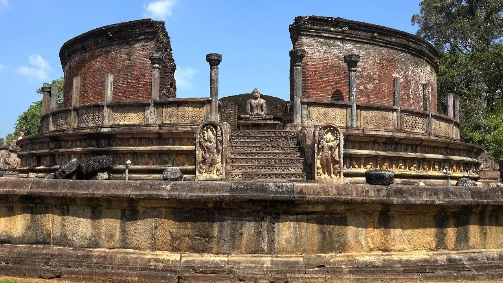
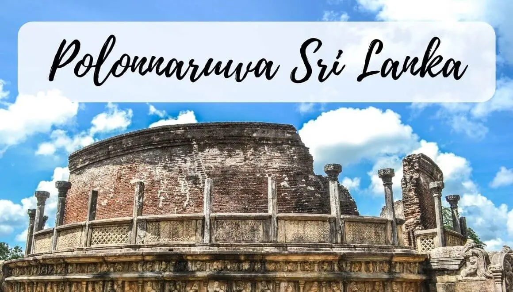
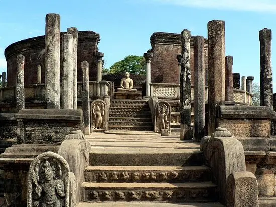
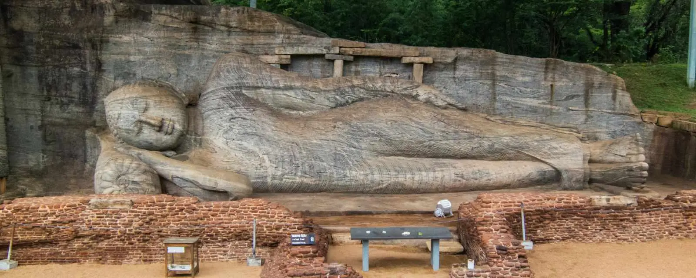
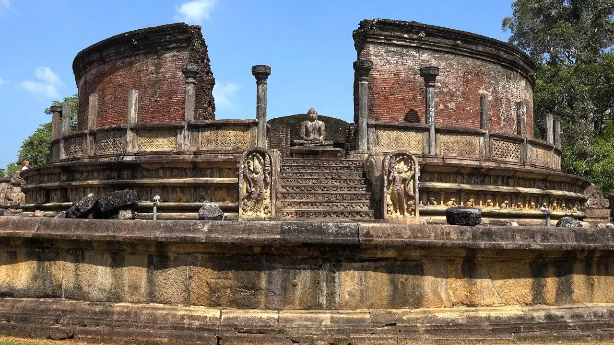
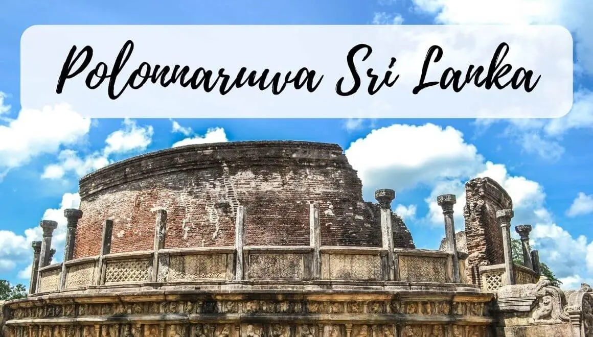
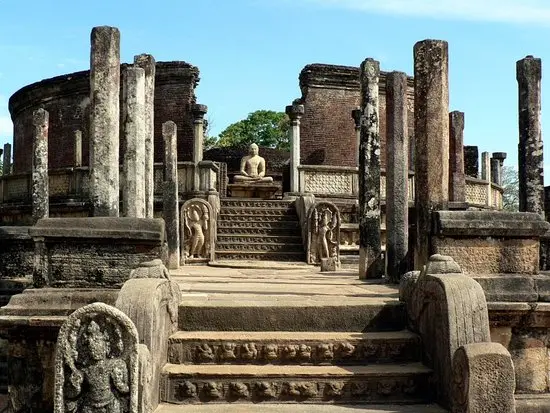
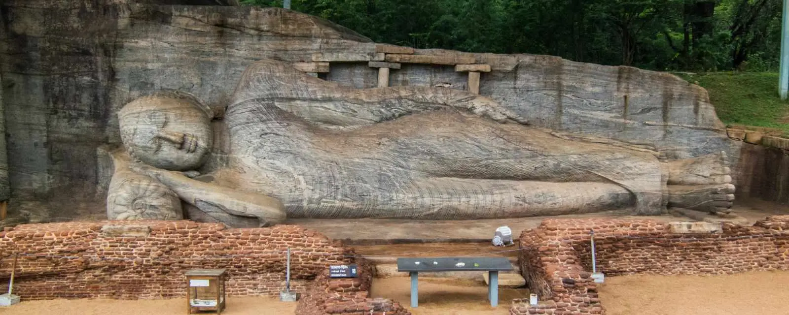

After the collapse of the Anuradhapura Kingdom in 993, Polonnaruwa Kingdom or the Ancient City of Polonnaruwa served as the second capital of Sri Lanka for three centuries, from the 11th to the 13th centuries. It is found in Sri Lanka's north central province. UNESCO designated Polonnaruwa as a World Heritage Site in 1982 under the name Historic City of Polonnaruwa due to its archeological importance and ancient technical supremacy.